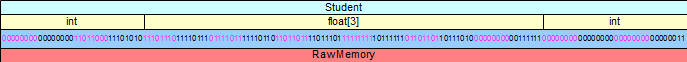

|
Software
Development |
|
Part E - Polymorphism
Virtual Functions Design polymorphic objects to amplify the reusability of code Distinguish monomorphic and polymorphic objects Describe the difference between early binding and dynamic dispatch "Respecting the inclusion relationship implies substitutability - operations that apply to entire sets should apply to any of their subsets as well." (Sutter, Alexandrescu, 2005) Types | Function Bindings | Polymorphic Objects | Reusability Flexibility | Summary | ExercisesObject-oriented languages support selection of behavior across related types through polymorphism. Polymorphism is the third principal concept that these languages implement (alongside encapsulation and inheritance). Polymorphism refers to the multiplicity of meanings attached to a single identifier. Polymorphic stands for 'of many forms'. A polymorphic language selects an operation on an object based on the type associated with the object. Virtual functions are an example of inclusion polymorphism. Object-oriented languages implement inclusion polymorphism through member functions in a hierarchy. The type of a polymorphic object can change throughout its lifetime to any type in the same inheritance hierarchy. We distinguish between the static and dynamic type associated with a polymorphic object. Its static type is the type of the object's hierarchy, its dynamic type is the object's actual type. This chapter describes how C++ implements inclusion polymorphism. The chapter describes the concept of types, the options for binding a function call to its definition and how polymorphic objects are implemented in C++. Types Raw memory stores information in the form of bit strings. These bit strings represent variables, objects, addresses, instructions, constants, etc. Without knowing what a bit string represents, the compiler cannot interpret the bit string. By associating a type with a region of memory, we tell the compiler how to interpret the bit string in that region of memory.  For example, if we associate a region of memory with a Student and define the structure of a Student, the compiler knows that the first 4 bytes holds an int stored in equivalent binary form, the next 12 bytes holds an array of 3 floats and the remaining 4 bytes hold an int. C++ Pointers C++ implements a polymorphic object using pointer syntax. The pointer type identifies the static type of the inheritance hierarchy to which the object belongs. This static type is known at compile time. The pointer holds the address of the polymorphic object. To dereference the object's address, the compiler needs to know its dynamic type. The dynamic type is the referenced type of the object. Initially, we specify the dynamic type at object creation time through the constructor that we invoke.
In the following example, we instantiate a Person* object by dynamically allocating memory once for a Person type and one for a Student type.
By implementing different behaviors for different types in the same hierarchy, we enable different execution paths in show() for different dynamic types. Function Bindings The compiler binds a function call to a function definition using an object's type. The object's type determines the member function to call in the inheritance hierarchy. The binding of a member function can take either of two forms:
Early Binding Consider the following definition of our Student class from the chapter entitled Functions in a Hierarchy:
The implementation file is also the same as in the chapter entitled Functions in a Hierarchy:
Note that this hierarchy has two distinct definitions of the member function named display(). The main() function listed below defines a global function named show(). This client code calls that global function twice, first for a Student object and second for a Person object. The global function show() in turn calls the display member function on p. The compiler binds the call to this member function to its Person version. C++ applies this convention irrespective of the argument type in the call to show(). That is, the compiler uses the parameter type in definition of show() to determine the kind of binding to implement. We call this binding an early binding. The client program produces the output shown on the right:
Early binding occurs at compile time and is the most efficient binding of a member function call to that function's definition. Early binding is the default in C++. Note that shadowing does not occur inside the global function show(). show() has no way of knowing which version of display() to select aside from the type of its parameter p. The statements harry.display() and jane.display() in the main() function demonstrate shadowing. The call to display() on harry shadows the base version of display(). Dynamic Dispatch The output in the above example omits the details for the Student part of harry. To output these details, we need to postpone the binding of the call to display() until run-time when the executable code is aware of the dynamic type of object p. We refer to this postponement as dynamic dispatch. C++ provides the keyword virtual for dynamic dispatching. If this keyword is present, the compiler inserts code that binds the call to most derived version of the member function based on the dynamic type. For example, the keyword virtual in the following class definition instructs the compiler to postpone calling the display() member function definitions until run-time:
Note that the implementation file and the client program have not changed. Because the keyword is present, the compiler overrides the early binding of display() so that the show() function will call the most derived version of display() for the type of the argument passed to it. The following client code (identical to that above) then produces the output shown on the right:
Each call to show() passes a reference to an object of different dynamic type:
In each case, the executable code binds at run time the version of display() that is the most derived version for the dynamic type referenced by the parameter in show(). Note that if we pass the argument to the show() function by value instead of by reference, the show() function would still call the most derived version of display(), but that most derived version would be for the Person version, since the copied object would be a Person in all cases. Overriding Dynamic Dispatch To override dynamic dispatch with early binding, we resolve the scope explicitly:
Documentation Some programmers include the qualifier virtual in derived class declarations as a form of documentation. This improves readability but has no syntactic effect. We can identify a member function as virtual even if no derived class exists. This clarifies the intent of the original developer for subsequent developers of the hierarchy Polymorphic Objects A polymorphic object is an object that can change its dynamic type throughout its lifetime. Its static type identifies the hierarchy of types to which the object belongs. Its dynamic type identifies the rule for interpreting the bit string in the region of memory currently allocated for the object. We specify the static type of a polymorphic object through
For example, the highlighted code specifies the static type pointed to by person:
We specify the dynamic type of a polymorphic object by allocating memory dynamically using the appropriate constructor from the inheritance hierarchy. The highlighted code in the example below identifies the dynamic type. The results produced by this code are listed on the right:
In the main() function:
The static and dynamic types are related to one another through the hierarchy. Note that we only need one show() function to display both dynamic types. p holds the address a polymorphic object throughout its lifetime. That address may change with deallocations and fresh allocations of memory. The dynamic type may be of any type in the Person hierarchy. show() is a polymorphic function. Its parameter receives an unmodifiable reference to any type in the Person hierarchy. Good Design It is good programming practice to dynamically dispatch the destruction of any object in an inheritance hierarchy as virtual. If an object of a derived class acquires a resource, typically the destructor of that class releases the resource. To ensure that any object in the hierarchy calls the destructor of its most derived class at destruction time, we declare the base class destructor virtual. Since the destructor of any derived class automatically calls the destructor of its immediate base class, all destructors in the object's hierarchy will be called in turn. Good design codes the destructor in a base class as virtual, even if no class is currently derived from that base class. The presence of a virtual base class destructor ensures that the most derived destructor will be called if and when a class is derived from the base class without requiring an upgrade to the definition of the base class. Reusability and Flexibility Implementing inclusion polymorphism improves reusability and flexibility of code. Virtual functions reduce code size considerably. Our show() function works on references of any type within the Person hierarchy. We only define member functions (display()) for those classes that require specialized processing. Consider a client application that uses our hierarchy. During the life cycle of the hierarchy, we may add several classes. Our original client code, without any alteration, will selects the most derived version of the member function for each upgrade of the hierarchy. We will only need to add client code to create objects of new derived classes. Summary
Exercises
|

| |
Top |
| Previous: Functions in a Hierarchy | Next: Abstract Base Classes |
| Designed by Chris Szalwinski | Copying From This Site |